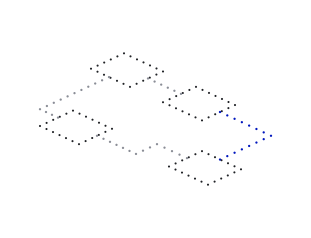
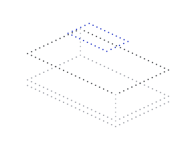
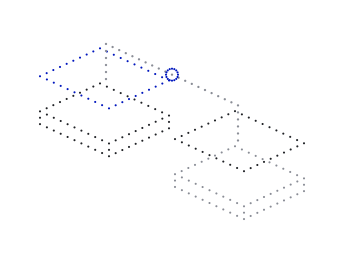
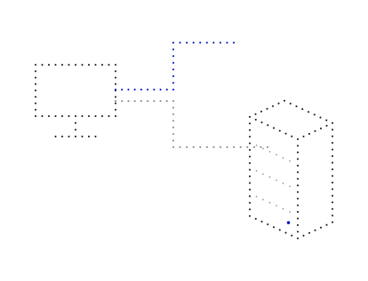
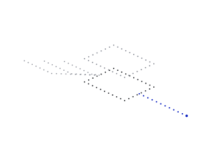
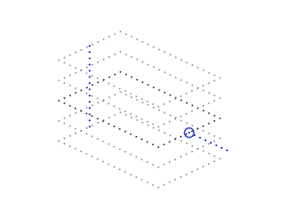

Reduced attack surface
01
Carry fewer components into operation. Give your team less software to maintain and defend.
Protect essential operations, run useful computation where it is needed, and retain control over business data.

Carry fewer components into operation. Give your team less software to maintain and defend.
Limit each workload to the data, services and resources its job requires. Keep authority explicit as the operation grows.
Run essential services, task-specific models and demanding applications on resources selected for the work.

New applications should help the business move forward. Each added service, model and device also brings exposure, resource demands and ongoing maintenance. Neurulus brings compute and the operating system together so those demands can be managed as one product.

Neurulus Platform combines compute with Silicon OS in one integrated Linux system. Run useful workloads, limit their authority and keep system changes accountable, so new capability stays manageable for your team.
Inside Silicon OS
Begin with the workload and the environment in which it must run.
Compute supplied with Silicon OS integrated. Choose the system around the task, its interfaces and its operating constraints.
Discuss new computeAssess Silicon OS for suitable existing hardware. Adoption depends on workload fit, hardware support and required interfaces.
Assess an existing system
| New deployment | Existing hardware | |
|---|---|---|
| The problem | Hardware and software arrive as separate decisions. | Useful hardware carries a system that needs to change. |
| The product | Compute with Silicon OS integrated. | Silicon OS where the hardware and workload fit. |
| Your outcome | One system selected around the work. | Retain useful resources with a smaller operating foundation. |
| Starting point | Workload, interfaces and operating constraints. | Workload and compatibility assessment. |

Run business services, process sensor or camera signals, and make private knowledge useful. Choose the applications and intelligence that deliver the required result, with compute sized for response time, power and deployment constraints.
| Work | Possible resource | Required result |
|---|---|---|
| Routine business process | Conventional software | A completed operation |
| Inspection or event detection | Task-specific vision | An event to act on |
| Private knowledge | A selected language model | An answer for the team |

Control reaches beyond where data is stored. It includes the platform, models, compute and energy that an operation depends on.
Silicon OS is shipping to select customers. The wider programme includes prior energy work. Custom chip design and tapeout remain future work.
“We can now find flaws faster
than anyone can fix them.”
Legacy systems, growing volumes of AI-generated code, automated attacks, data governance obligations and rising hardware costs.
More work moves from batch processing to real-time agents, incident response and research with a limited response budget.
Cities, water, mobility and essential services place growing demands on distributed systems and the people who maintain them.
Tell us what must run, the result it must deliver and the constraints around it.